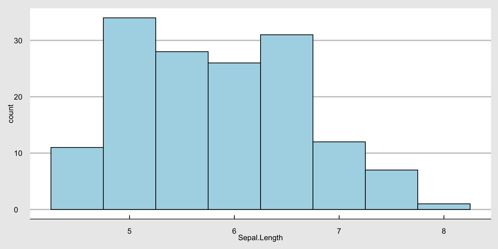

松浦プレゼミ2023では、データに強い経営学部生となるため、データ分析のツールとしてもはやデファクトスタンダードとなっている(いいすぎ)プログラミング言語Rを使って、様々な分析を行うためのスキルの修得を目指します。 株価データや会計データ、POSデータといったデータベース以外にも、自分で集めたアンケートのデータや、Webスクレイピングで集めたデータなど、様々なデータを分析することができるスキルは、会計・ファイナンスだけでなく、組織、戦略、マーケティングと様々な分野で役に立つはずです。
またRで分析した結果をレポートにまとめる際に有用なツールとして、Quartoを勉強します。 Quarto(クアルト)とは、Markdown記法で書かれた文章の中に、RだけでなくPythonなど他の言語も組み込める便利なツールです。
メリット
デメリット
メリット
デメリット
Excelでは扱えないかなり大きなデータでも簡単にデータ操作ができます。 たとえば、データ分析の練習用データとして有名なirisデータをいろいろ操作してみましょう。 irisは「あやめ」という花の花びらとがく片の長さと幅の4項目と3種類のあやめの分類名の1項目の合計5項目が150件収録されているデータベースです。Rには練習用に最初から入っているので、head()関数を使ってirisの先頭の6行を読み込んでみます。
Sepal.Length Sepal.Width Petal.Length Petal.Width Species
1 5.1 3.5 1.4 0.2 setosa
2 4.9 3.0 1.4 0.2 setosa
3 4.7 3.2 1.3 0.2 setosa
4 4.6 3.1 1.5 0.2 setosa
5 5.0 3.6 1.4 0.2 setosa
6 5.4 3.9 1.7 0.4 setosaこのように、Sepal.Length、Sepal.Width、Petal.Length、Petal.Width、Speciesという5つの項目が入っていることが分かります。Sepalは花びらで、Petalはがく片です。まず花びらの長さSepal.Lengthの平均を求めてみましょう。平均を返す関数はmean()です。
[1] 5.843333あやめの花びらの長さの平均は、5.8433333であることが分かりました。簡単ですね。
次に、あやめの種類を表すSpeciesにはどんな種類があるのか見てみましょう。 Speciesに入っている種類を確認するには、table()関数を使ってみます。
setosa versicolor virginica
50 50 50 あやめの種類には、setosa、versicolor, virginicaがあり、それぞれ50個のデータがあることが分かります。
では次にグラフを作成してみます。 最初に、花びらの長さのヒストグラムを書いてみます。 ここでは、非常に便利かつ簡単に美しいグラフを作成できるggplot2パッケージを使うために、tidyverseパッケージを導入します。
ヒストグラムの階級幅を変更したり、棒の数を変更するには、geom_histogram()の中で指定します。 例えば、階級幅を0.5でヒストグラムを作る場合は、binwidth = 0.5のように指定します。
グラフが黒くて見づらいので、デザインをいじってみます。 geom_histogram()関数の中で、線を黒、中を薄青色に指定します。
背景が地味なので、グラフを雑誌Economist風にしてみます。
次は花びらの長さと幅の散布図を書いてみます。 ggplot2で散布図を書くためには、aes()でx軸とy軸を指定し、geom_point()で散布図を指定する。
カテゴリーを表す変数をgroupとcolourで指定すると、カテゴリーごとにグループ化して、色分けもしてくれます。ここでは花の種類を表す変数であるSpeciesごとに色分けしてみます。
操作できるグラフも作れます。 plotlyパッケージを使えば簡単です。
データを分析した結果を表や図としてレポートや論文に載せる場合、MS Excelで作成した図や表を、MS Wordにコピペしてませんか？ その場合、Wordで書いてたレポートの図表に少し修正を加えることになると、またExcelを開いて修正し、またコピペしたりしてませんか？ これはミスの元ですし、レポートを2週間後に読んだとして、その図表を作成したExcelがどこにあるのか、またどうやって作ったのか思い出せますか？ Rなら心配いりません。
QuartoやRmarkdownを使ってMarkdownでレポートを書けば、文章作成と図表を同じ場所で作成できます。 ちなみに、このウェブサイトもQuartoを使って作成し、GitHubでウェブサイト公開してます。
例えば、irisデータで、「あやめ」の種類ごとに、花びらの長さと幅の平均、中央値、標準偏差を計算し、それを表にしたいとしましょう。 Rなら簡単です。
| Species | 花びらの長さの平均 | 花びらの幅の平均 | 花びらの標準偏差 |
|---|---|---|---|
| setosa | 5.006 | 3.428 | 0.3790644 |
| versicolor | 5.936 | 2.770 | 0.3137983 |
| virginica | 6.588 | 2.974 | 0.3224966 |
たとえば、「あやめ」の種類ごとにがく片の長さが長いほど、花びらが長くなるかどうかを分析しようと回帰分析を行いたいとします。つまり以下のような回帰モデルを考えます（数式もこんなにキレイに書けます）。 Sepal.Length = \alpha + \beta \times Petal.Length + \varepsilon
この回帰モデルを最小二乗法(Ordinary Least Square Methos)で推定した結果を表にするときも次のように書けばできます。
| Characteristic | Beta | 95% CI1 | p-value |
|---|---|---|---|
| Petal.Length | 0.90 | 0.78, 1.0 | <0.001 |
| Species | |||
| setosa | 0.00 | — | |
| versicolor | -1.6 | -2.0, -1.2 | <0.001 |
| virginica | -2.1 | -2.7, -1.6 | <0.001 |
| 1 CI = Confidence Interval | |||
他にもこんな感じにできます。
| term | estimate | std.error | statistic | p.value |
|---|---|---|---|---|
| (Intercept) | 3.68 | 0.11 | 34.72 | 0 |
| Petal.Length | 0.90 | 0.06 | 13.96 | 0 |
| Speciesversicolor | -1.60 | 0.19 | -8.28 | 0 |
| Speciesvirginica | -2.12 | 0.27 | -7.74 | 0 |
つまり、経営学の知識、統計学の知識、それにRの知識を組み合わせれば、経営学で学んだ理論を使って仮説を考え、その仮説を検証するために必要なデータを集め、適切な統計分析手法を使い、その結果をまとめてレポート・論文にする一連のプロセスを、一カ所にまとめることができます。 さあ、Rを勉強して、統計分析と効率的なレポート・論文作成のスキルを身につけましょう。